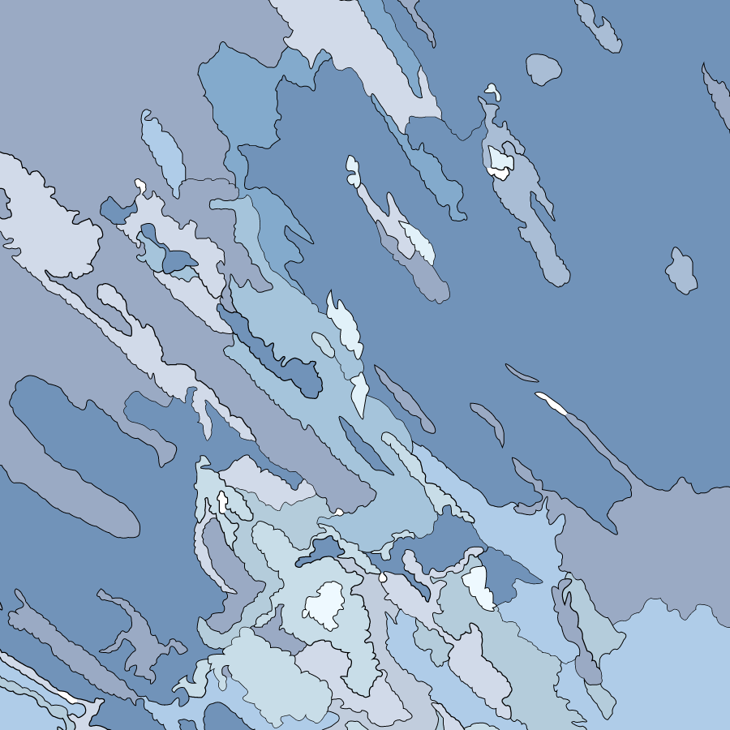

File 01 巻雲
風で雲が流され、青空にはけで白いペンキをはいたようだったり、釣り針のように先が曲がったように見えたりする雲です。天気がよく晴れた日の上空での風が強い時に出現します。
・別名すじ雲、はね雲、しらす雲
・雲の仲間の中で一番高いところにできる
・秋の訪れを表す
・青空の広がった好天が転じて天気が崩れるとき、他の雲より先に最初に現れることが多い
・巻雲が見られるような段階ではその後数時間から1日は晴天が続く